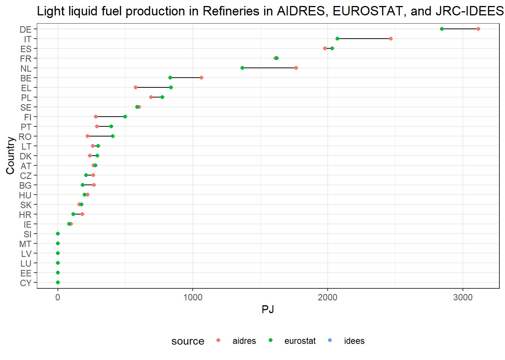

This is a stand-alone quarto document with code chunks and documentation for comparing Refinery sector product flow in AIDRES, EUROSTAT, and JRC-IDEES databases.
This document extracts refinery product flow for certain fuels (to match with Light Liquid Fuel category of AIDRES) from JRC-IDEES, EUROSTAT, and AIDRES database and generate comparison plots and tables to visualize and compare the product flow across those databases.
Using this file
The files are produced using R and RStudio. Though this document can be executed using command line, it is recommended to use RStudio for rendering.
Clone this repository to your computer. Open the mopo_repo.Rproj (RStudio needs to be installed) file. Open refinery_analysis.qmd and click on render button (Crtl + Shift + K).
Loading libraries
Checking whether the required packages are installed or not. If not, install them and load them. If they are already installed, just load them.
# A tibble: 27 × 2
country country_iso_code
<chr> <chr>
1 Austria AT
2 Belgium BE
3 Bulgaria BG
4 Croatia HR
5 Cyprus CY
6 Czechia CZ
7 Denmark DK
8 Estonia EE
9 Finland FI
10 France FR
# ℹ 17 more rows
JRC-IDEES Refinary product flow
Download IDEES excel files
JRC‑IDEES provides a consistent set of disaggregated energy-economy-emissions data for each Member State of the European Union, covering all sectors of the energy system for the 2000-2021 period: industry, buildings, transport, and power generation. This data complies with Eurostat energy balances while providing a plausible decomposition of energy consumption into specific processes and end uses(Mate et al. 2024).
Checking whether there is a directory (./input_data/jrc_idees_2021/energy_balance) containing JRC-IDEES excel files for energy balance. If not (only checking with JRC-IDEES-2021_EnergyBalance_AT.xlsx), creating the directory, downloading the zipped files, and extracting them for each country.
Show the code
idees_data <-here('input_data', 'jrc_idees_2021', 'energy_balance')if (!dir.exists(idees_data)){print("Directory doesn't exists! Creating one")dir.create(idees_data, recursive =TRUE)print("Downloading files")for(country_code in country_codes$country_iso_code){ zip_file <-paste0("https://jeodpp.jrc.ec.europa.eu/ftp/jrc-opendata/JRC-IDEES/JRC-IDEES-2021_v1/JRC-IDEES-2021_", country_code) filename <-paste0("JRC-IDEES-2021_EnergyBalance_", country_code, ".xlsx")archive_extract(archive = zip_file,dir = idees_data,files = filename) } } else {print(paste('Directory', idees_data, 'already exists!'))if(!file.exists(here(idees_data, 'JRC-IDEES-2021_EnergyBalance_AT.xlsx'))){print("But files does not exists! downloading them")for(country_code in country_codes$country_iso_code){ zip_file <-paste0("https://jeodpp.jrc.ec.europa.eu/ftp/jrc-opendata/JRC-IDEES/JRC-IDEES-2021_v1/JRC-IDEES-2021_", country_code) filename <-paste0("JRC-IDEES-2021_EnergyBalance_", country_code, ".xlsx")archive_extract(archive = zip_file,dir = idees_data,files = filename) } } else {print(paste('Files also already exist inside the directory, not downloading them again!')) }}
[1] "Directory C:/Users/VDPUTH/OneDrive - VITO/Mopo/Mopo_repo_github/input_data/jrc_idees_2021/energy_balance already exists!"
[1] "Files also already exist inside the directory, not downloading them again!"
Refinary product flow
From the Energy balance excel workbook we focus on the TO_RPI_RO sheet.
For the light liquid fuel category we only focus on the following fuels:
# A tibble: 27 × 6
country_code country year source fuel pj_ref
<chr> <chr> <dbl> <chr> <chr> <dbl>
1 AT Austria 2018 idees light_liquid_fuel 278.
2 BE Belgium 2018 idees light_liquid_fuel 833.
3 BG Bulgaria 2018 idees light_liquid_fuel 185.
4 CY Cyprus 2018 idees light_liquid_fuel 0
5 CZ Czechia 2018 idees light_liquid_fuel 211.
6 DE Germany 2018 idees light_liquid_fuel 2844.
7 DK Denmark 2018 idees light_liquid_fuel 293.
8 EE Estonia 2018 idees light_liquid_fuel 0
9 EL Greece 2018 idees light_liquid_fuel 838.
10 ES Spain 2018 idees light_liquid_fuel 2033.
# ℹ 17 more rows
EUROSTAT Refinary product flow
Downloading Eurostat energy balance
EUROSTAT API is used to dynamically fetch EUROSTAT data using eurostat package (Lahti et al. 2017). Please refer this link to more about the usage of the eurostat package.
Show the code
dat_aggregated_ref <-get_eurostat('nrg_bal_c', filters =list(time =2018),time_format ="num", type ='label', stringsAsFactors =TRUE)
Refinery product flow
We only focus on Transformation output - refineries and petrochemical industry - refinery output (TO_RPI_RO). Fuel choices (siec) are similar to JRC-IDEES.
# A tibble: 27 × 6
country_code country fuel year source pj_ref
<chr> <chr> <chr> <dbl> <chr> <dbl>
1 BE Belgium light_liquid_fuel 2018 eurostat 833.
2 BG Bulgaria light_liquid_fuel 2018 eurostat 185.
3 CZ Czechia light_liquid_fuel 2018 eurostat 211.
4 DK Denmark light_liquid_fuel 2018 eurostat 293.
5 DE Germany light_liquid_fuel 2018 eurostat 2844.
6 EE Estonia light_liquid_fuel 2018 eurostat 0
7 IE Ireland light_liquid_fuel 2018 eurostat 83.8
8 EL Greece light_liquid_fuel 2018 eurostat 838.
9 ES Spain light_liquid_fuel 2018 eurostat 2033.
10 FR France light_liquid_fuel 2018 eurostat 1622.
# ℹ 17 more rows
AIDRES refinery product flow
Establishing AIDRES database connection and fetching tables
AIDRES database is open source (Vermeiren et al. 2023). However the data is available as a raw .sql file which needs to be further used to setup a PostgreSQL database connection to fetch various tables. The data is also available as an Excel workbook. However, it is very customized to be used for specific analysis.
Importing AIDRES data from local .csv files
However, for an external user setting up a PostgreSQL server is not straight forward. Therefore, AIDRES tables are provided with this repository in the input_data\aidres_data directory.
the AIDRES tables used for this analysis are first exported into .csv files and then they are used further in the analysis. Following code chunks create the directory (input_data\aidres_data) for storing the AIDRES files, and exports the AIDRES data files into .csv format. However, they are currently deactivated as we provide the files already with the repo.
Show the code
aidres_data <-here('input_data', 'aidres_data')if (!dir.exists(aidres_data)){print("AIDRES input data folder doesn't exist. Request VITO to provide the data")dir.create(aidres_data)} else {print("AIDRES input data directory already exists. Not creating a new one!")print("AIDRES data tables also exist!")}
[1] "AIDRES input data directory already exists. Not creating a new one!"
[1] "AIDRES data tables also exist!"
The AIDRES data tables namely aidres_scenarios.csv, aidres_sectors.csv, aidres_result.csv, aidres_configurations.csv, aidres_perton.csv are made available in the aidres_data folder. The code chunk is currently deactivated.
Dumping AIDRES PSQL tables to .csv files (currently deactivated)
Rows: 9 Columns: 29
── Column specification ────────────────────────────────────────────────────────
Delimiter: ","
dbl (29): scenario_id, horizon, electricity_[kgco2/kwh], alternative_fuel_mi...
ℹ Use `spec()` to retrieve the full column specification for this data.
ℹ Specify the column types or set `show_col_types = FALSE` to quiet this message.
Rows: 7 Columns: 3
── Column specification ────────────────────────────────────────────────────────
Delimiter: ","
chr (2): name, description
dbl (1): id
ℹ Use `spec()` to retrieve the full column specification for this data.
ℹ Specify the column types or set `show_col_types = FALSE` to quiet this message.
Rows: 133148 Columns: 42
── Column specification ────────────────────────────────────────────────────────
Delimiter: ","
chr (1): nuts3
dbl (41): aidres_sector_id, is_mix, is_ref_route, is_ref_scenario, is_ref_so...
ℹ Use `spec()` to retrieve the full column specification for this data.
ℹ Specify the column types or set `show_col_types = FALSE` to quiet this message.
Rows: 219 Columns: 12
── Column specification ────────────────────────────────────────────────────────
Delimiter: ","
chr (5): sector_id, product_id, route_name, abbreviation, description
dbl (7): aidres_sector_id, configuration_id, route_id, mix_2018, mix_2030, m...
ℹ Use `spec()` to retrieve the full column specification for this data.
ℹ Specify the column types or set `show_col_types = FALSE` to quiet this message.
Rows: 1468 Columns: 42
── Column specification ────────────────────────────────────────────────────────
Delimiter: ","
dbl (42): solution_id, configuration_id, scenario_id, aidres_sector_id, hori...
ℹ Use `spec()` to retrieve the full column specification for this data.
ℹ Specify the column types or set `show_col_types = FALSE` to quiet this message.
Production all sectors in 2018
Product flow of different products in various sectors
# A tibble: 185 × 5
country_code sector_id product_id production_route_name production_kt_y
<chr> <chr> <chr> <chr> <dbl>
1 AT cement cement EU-mix-2018 4214.
2 AT chemical chemical-PE (NG)PE 94.3
3 AT chemical chemical-PEA (NG)PEA 130.
4 AT chemical chemical-olefi… (LN)O 1273.
5 AT fertiliser fertiliser-amm… (NG)NH3 383.
6 AT glass glass-container (NG) 577.
7 AT refineries refineries-lig… REF-SMR 6189.
8 AT steel steel-primary BF-BOF 6177
9 AT steel steel-secondary Scraps EAF 708
10 BE cement cement EU-mix-2018 5538.
# ℹ 175 more rows
Refinery product flow
AIDRES only considers light liquid fuels with lower heating value (LHV) of 42.87 MJ/kg. AIDRES product flow is reported in Million tonne. We are using the LHV value to convert the product flow into PJ.
# A tibble: 75 × 6
country_code country fuel year source pj_ref
<chr> <chr> <chr> <dbl> <chr> <dbl>
1 AT Austria light_liquid_fuel 2018 aidres 265.
2 AT Austria light_liquid_fuel 2018 idees 278.
3 AT Austria light_liquid_fuel 2018 eurostat 278.
4 BE Belgium light_liquid_fuel 2018 aidres 1064.
5 BE Belgium light_liquid_fuel 2018 idees 833.
6 BE Belgium light_liquid_fuel 2018 eurostat 833.
7 BG Bulgaria light_liquid_fuel 2018 aidres 268.
8 BG Bulgaria light_liquid_fuel 2018 idees 185.
9 BG Bulgaria light_liquid_fuel 2018 eurostat 185.
10 CY Cyprus light_liquid_fuel 2018 idees 0
# ℹ 65 more rows
Data comparison
Creating output directory
Show the code
output_dir <-here('outputs', 'refinery')if (!dir.exists(output_dir)){print("Output directory doesn't exist. Creating a new one!")dir.create(output_dir)} else {print("Output directory already exists. Not creating a new one!")}
[1] "Output directory doesn't exist. Creating a new one!"
Plot
Show the code
#| warning: false ref_data_sources |>ggplot(aes(pj_ref, fct_reorder(country_code, pj_ref, .fun=sum))) +geom_line()+geom_point(aes(colour = source), size =1.5) +theme_bw() +labs(title ='Light liquid fuel production in Refineries in AIDRES, EUROSTAT, and JRC-IDEES',y ='Country',x ='PJ') +theme(legend.position ="bottom") -> p1 p1

Show the code
ggsave(here(output_dir, 'ref_pf_compare.pdf'), width =14, height =8, units ='in', dpi =900)
Table
Show the code
ref_data_sources |>select(-fuel, -year) |>pivot_wider(names_from = source, values_from = pj_ref) |>mutate(across(.cols =-(1:2), .fns =~replace_na(., replace =0)),across(.cols =-(1:2), .fns =~round(., 2))) |>arrange(country_code) |>gt() |>cols_label(country_code ='Code',country ='Name',aidres ='AIDRES',idees ='JRC-IDEES',eurostat ='EUROSTAT' ) |>tab_spanner(label =md('**Data Source**'),columns =3:5) |>tab_spanner(label =md('**Country**'),columns =1:2) |>tab_header(title ='Light liquid fuel production (PJ) from refineries in 2018',subtitle ='Comparison between AIDRES, JRC-IDEES, and EUROSTAT') |>sub_zero(zero_text ='-') |>opt_stylize(style =6, color ='gray')
Light liquid fuel production (PJ) from refineries in 2018
Comparison between AIDRES, JRC-IDEES, and EUROSTAT
Country
Data Source
Code
Name
AIDRES
JRC-IDEES
EUROSTAT
AT
Austria
265.32
278.41
278.39
BE
Belgium
1063.95
833.23
833.19
BG
Bulgaria
268.02
185.19
185.18
CY
Cyprus
-
-
-
CZ
Czechia
262.58
210.62
210.61
DE
Germany
3113.91
2843.70
2843.56
DK
Denmark
237.97
292.79
292.78
EE
Estonia
-
-
-
EL
Greece
577.12
837.90
837.86
ES
Spain
1980.21
2032.79
2032.69
FI
Finland
281.70
500.52
500.50
FR
France
1610.97
1621.71
1621.64
HR
Croatia
183.27
114.79
114.79
HU
Hungary
221.55
198.19
198.18
IE
Ireland
98.47
83.83
83.82
IT
Italy
2467.08
2071.88
2071.78
LT
Lithuania
259.84
298.94
298.92
LU
Luxembourg
-
-
-
LV
Latvia
-
-
-
MT
Malta
-
-
-
NL
Netherlands
1764.14
1367.49
1367.17
PL
Poland
691.96
775.70
775.67
PT
Portugal
289.93
396.26
396.24
RO
Romania
221.55
407.48
407.46
SE
Sweden
601.72
589.58
589.56
SI
Slovenia
-
-
-
SK
Slovakia
158.62
177.83
177.82
Diff file
The data containing product flow values from the three sources are exported into an Excel workbook for further analysis. NA values are replaced by 0.
Lahti, Leo, Janne Huovari, Markus Kainu, and Przemysław Biecek. 2017. “Retrieval and Analysis of Eurostat Open Data with the eurostat Package.”The R Journal 9 (1): 385–92. https://doi.org/10.32614/RJ-2017-019.
Vermeiren, Karolien, Wim Clymans, Lorenz Hambsch, and Leen Van Esch. 2023. “AIDRES - Advancing Industrial Decarbonization by Assessing the Future Use of Renewable Energies in Industrial Processes.” European Commission, Joint Research Centre. http://data.europa.eu/89h/14914982-70a9-4d1d-a2fc-cdee4a1d833d.